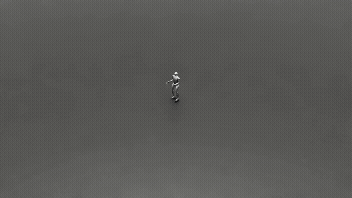

Mehmet Turan Yardimci
Building reinforcement learning systems for humanoid robot whole-body control. Currently developing a hierarchical VLM-RL loco-manipulation pipeline for the Unitree G1 humanoid in NVIDIA Isaac Lab.
Download CVResearch Interests
Isaac G1 Humanoid VLM-RL Loco-Manipulation
Hierarchical reinforcement learning system for Unitree G1 humanoid robot — whole-body control with 43 degrees of freedom and Vision-Language Model integration.
- Triple Actor-Critic architecture: Separate policies for locomotion (legs + waist), arm reaching (shoulders + elbows + wrists), and hand control (DEX3 3-finger dexterous hands)
- Dual Actor-Critic loco-manipulation: Decoupled locomotion and arm policies trained sequentially with curriculum learning, achieving coordinated walking and reaching
- Anti-gaming mechanisms: Absolute target sampling, 3-condition reach validation, movement-centric rewards to prevent curriculum exploitation
- 29-DoF whole-body model: 12 leg + 3 waist + 8 arm + 6 wrist joints, with 14 DEX3 finger joints for grasping
- Goal task: Squat, pick object from ground, stand up, walk to table, place object in box
Projects

Isaac Lab Anymal-C Quadruped Locomotion
PPO algorithm implemented from scratch for ANYmal-C quadruped robot. Achieved 17,000+ steps/sec training with domain randomization and reward shaping on RTX 5070 Ti.
View on GitHub →
MuJoCo Ant-v5 PPO from Scratch
PPO and SAC implemented with pure NumPy and PyTorch for MuJoCo Ant-v5. Achieved 2700+ reward by eliminating hopping through custom reward shaping. 16 parallel environments with GAE.
View on GitHub →
Live Actor-Critic Training (CartPole)
Interactive Streamlit web app demonstrating real-time RL training. Actor-Critic algorithm with adjustable hyperparameters for educational visualization.
View on GitHub →
BARN Benchmark: Local Path Planners
Benchmarking framework using ROS and the BARN dataset to evaluate local path planners (DWA, TEB) in cluttered environments. Academic paper pending publication.
View on GitHub →
YOLOv7 Fixed-Wing UAV Detection
Real-time object detection system for autonomous UAV operations using YOLOv7, integrated with Jetson Nano and Pixhawk flight controllers for TEKNOFEST competitions.
View on GitHub →
PID Control with NXT Robot
PID controller implemented on LEGO Mindstorms NXT robots for precise motor control with real-time sensor feedback, using NXC language.
View on GitHub →
Education
Bachelor's Degree in Computer Engineering (English)
- GPA: 2.85 / 4.00
- Thesis: Benchmarking Local Path Planners in ROS using the BARN Dataset
- Focus: AI, robotics, pattern recognition, optimal control
Erasmus+ Exchange — Computer Science (English)
- GPA: 4.9 / 5.0
- Focus: Robotics, PID control, HCI, computer graphics
Experience
Computer Engineering Intern
- In-house software development with .NET and C#
Computer Engineering Intern
- Algorithmic solutions for cement production automation
- Software architecture, debugging, and UI design with .NET
Team Leader
- Led 10+ members designing autonomous UAV systems
- TUBITAK and TEKNOFEST competition projects
- AI-based image processing for autonomous navigation (YOLOv5, Jetson Nano, Pixhawk)